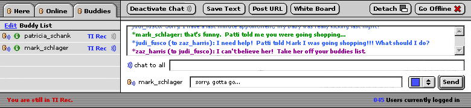

This scenario shows possible uses of the Chat, or more accurately "synchronous activity", frame. When users first come in, neither chat or PM is active. You are "online" and will appear greyed out on the list.
Here, Judi has sent a private message to Jamie. Notice the red messages that appear in the bottom left throughout this sequence.
A minor mistake here- I believe that since Judi has not joined chat herself, she can only view her personal messages in the chat window and not the room's chatter.
Now Judi's icon should be blue (sorry- missed this). She has joined the chat.
Judi is checking out who is Online. Her chat window remains and continues to display the chat of her current location. Blue icons only reflect those members participating in chat at her current location.
Now she's moved to her Buddy list. Again, the chat still reflects activity in the current room, as do icons.
Judi has clicked "Go Offline" and her chat window collapses (different than "detaches"). Chat-related options are greyed out. Clicking on any of the remaining icons will re-open the chat window but not make you "live" unless you activate chat or begin PM'ing.